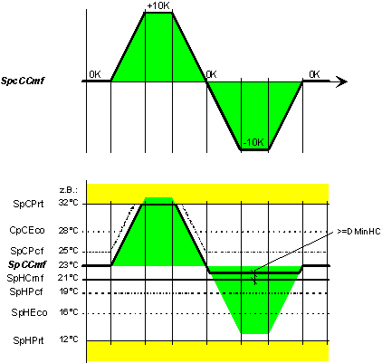
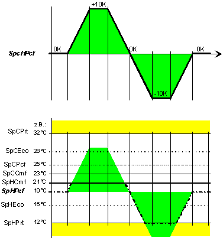
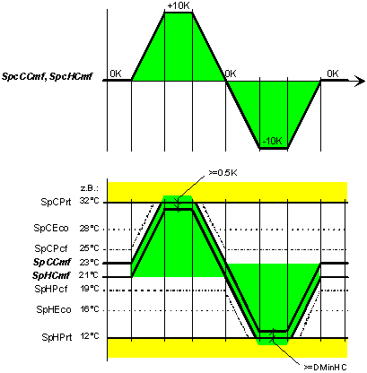
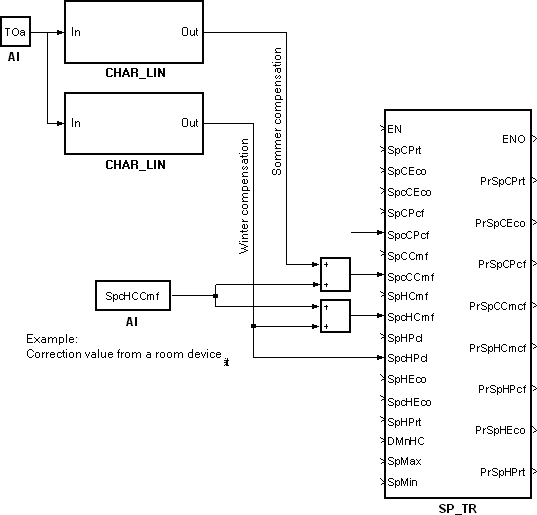

SP_TR: Determination room temperature setpoint
The SP_TR (FB488) block has several setpoints due to setpoint corrections.
The SP_TR block allows for the central definition of room setpoints (for heating and cooling in all operating modes). Here, one or several correction values are used to update the room setpoints. SP_TR_SiUn (FB488), SP_TR_UsUn (FB797)
Functionality
The following functions are integrated in the block:
- Correction for room setpoints for Comfort, Pre-Comfort, and Economy (heating, cooling).
- Adjustment of dependent room setpoints based on the setpoint shift model.
The block calculates all present room setpoints based on the active setpoint corrections and of a setpoint shift model.
| Process |
1 | Heating setpoint for Comfort. [PrSpHCmf] = [SpHCmf] + [SpcHCmf]. The upper limit is [SpCPrt] - [DMinSpHC]; the lower limit is [SpHPrt]. Example 1: Setpoint correction via [SpcHCmf]. |
2 | Cooling setpoint for Comfort. [PrSpCCmf] = [SpCCmf] + maximum of ([SpcCCmf], [SpcHCmf]). The upper limit is [SpCPrt]; the lower limit is [PrSpHCmf] + [DMinSpHC]. Example 2: Setpoint correction via [SpcCCmf].
|
3 | Cooling setpoint for Pre-Comfort. [PrSpCPcf] = [SpCPcf] + maximum of ([SpcCCmf], [SpcCCmf], [SpcHCmf]). The upper limit is [SpCPrt]; the lower limit is [PrSpCCmf]. Example 3: Setpoint correction via [SpcCCmf].
Analogous: [SpcCCmf]. Example 2: Setpoint correction via [SpcCCmf]. |
4 | Cooling setpoint for Economy. [PrSpCEco] = [SpCEco] + [SpcCEco]. Or if [PrSpCPcf] > [SpCEco]: [PrSpCEco] = [SpCEco] + maximum of ([SpcCEco], [SpcCCmf], [SpcCCmf], [SpcHCmf]). The upper limit is [SpCPrt]; the lower limit is [PrSpCPcf]. Example 4: Setpoint correction via [SpcCEco].
Analogous: [SpcCCmf]. Example 2: Setpoint correction via [SpcCCmf]. Analogous: [SpcCCmf]. Example 3: Setpoint correction via [SpcCCmf]. |
5 | Heating setpoint for Pre-Comfort. [PrSpHPcf] = [SpHPcf] + [SpcHPcf]. The upper limit is [SpCCmf]; the lower limit is [SpHPrt]. Example 5: Setpoint correction via [SpcHPcf].
|
6 | Heating setpoint for Economy. [PrSpHEco] = [SpHEco] + [SpcHEco]. Or if [PrSpHPcf] > [SpHEco]: [PrSpHEco] = [SpHEco] + minimum of ([SpcHPcf], [SpcHCmf]). The upper limit is [SpHPcf]; the lower limit is [SpHPrt]. Example 6: Setpoint correction via [SpcHEco]. |
Example 1: Setpoint correction via [SpcHCmf]

Calculation rules:
- The cooling setpoints [PrSpCCmf], [PrSpCPcf] are raised by [SpcHCmf].
- The heating setpoint [PrSpHPcf] is lowered by [SpcHCmf].
- The cooling setpoint [PrSpCEco] is raised along [PrSpCPcf]. The heating setpoint [PrSpHEco] is lowered along [PrSpHPcf].
- [SpCPrt] and [SpHPrt] limit all present setpoints [PrSp...].
- The difference between [PrSpCCmf] and [PrSpCPcf], or between [PrSpHCmf] and [PrSpHPcf] becomes smaller only at the limits [SpCPrt] or [SpHPrt].
- The difference between [PrSpHCmf] and [PrSpCCmf] is always the equal or greater to [DMinSpHC]. Accordingly, [PrSpHCmf] has an upper limit.
Example 2: Setpoint correction via [SpcCCmf]

Calculation rules:
- The cooling setpoint [PrSpCPcf] is raised by [SpcCCmf].
- The cooling setpoint [PrSpCEco] is raised along [PrSpCPcf].
- [SpcCCmf] does not influence the heating setpoints [PrSpH...].
- [SpCPrt] and [SpHCmf] + [DMinSpHC] limit [PrSpCCmf].
- The difference between [PrSpCCmf] and [PrSpCPcf] becomes smaller only at the limit [SpCPrt].
- The difference between [PrSpHCmf] and [PrSpCCmf] is always the equal or greater to [DMinSpHC]. Accordingly, [PrSpCCmf] has a lower limit.
Example 3: Setpoint correction via [SpcCCmf]

Calculation rules:
- The cooling setpoint [PrSpCEco] is raised along [PrSpCPcf].
- [SpcCCmf] does not influence the heating setpoints [PrSpH...] and [PrSpCCmf].
- [SpCPrt] and [SpCCmf] limit [PrSpCPcf].
Example 4: Setpoint correction via [SpcCEco]

Calculation rules:
- [SpcCEco] does not influence the heating setpoints [PrSpH...] and [PrSpCCmf], [PrSpCPcf].
- [SpCPrt] and [SpCPcf] limit [PrSpCEco].
Example 5: Setpoint correction via [SpcHPcf]

Calculation rules:
- The cooling setpoint [PrSpHEco] is lowered along [PrSpHPcf].
- [SpcHPcf] does not influence the cooling setpoints [PrSpC...] and [PrSpHCmf].
- [SpHCmf] and [SpHPrt] limit [PrSpHPcf].
Example 6: Setpoint correction via [SpcHEco]

Calculation rules:
- [SpcHEco] does not influence the cooling setpoints [PrSpC...] and [PrSpHCmf], [PrSpHPcf].
- [SpHPcf] and [SpHPrt] limit [PrSpHEco].
Example 7: Simultaneous setpoint correction via [SpcHCmf] and [SpcCCmf]
The following diagram shows the behavior during a simultaneous, parallel shift of [PrSpHCmf] and [PrSpCCmf] by the same value (typical behavior for knob with mechanically stored locked state).

Because [PrSpHCmf] is the manager (calculated first), it moves all upper curves prior to calculation.

Inputs
Pin | E | Description |
SpCPrt | pa | Cooling setpoint for protection. Condition: [SpCPrt] <= [SpMax], and [SpCPrt] >= [SpHPrt] + [DMinSpHC]. |
SpCEco | pa | Cooling setpoint for economy. Condition: [SpCEco] <= [SpCPrt], and [SpCEco] >= [SpCPcf]. |
SpcCEco | pa | Cooling setpoint correction for economy |
SpCPcf | pa | Cooling setpoint for pre-Comfort. Condition: [SpCPcf] <= [SpCPrt], and [SpCPcf] >= [SpCCmf]. |
SpcCPcf | pa | Cooling setpoint correction for pre-comfort |
SpCCmf | pa | Cooling setpoint for comfort. Condition: [SpCCmf] <= [SpCPrt], and [SpCCmf] >= [SpHCmf] + [DMinSpHC]. |
SpcCCmf | pa | Cooling setpoint correction for comfort |
SpHCmf | pa | Heating setpoint for comfort. Condition: [SpHCmf] >= [SpHPrt], and [SpHCmf] <= [SpCCmf] - [DMinSpHC]. |
SpcHCmf | pa | Heating setpoint correction for comfort |
SpHPcf | pa | Heating setpoint for pre-Comfort. Condition: [SpHPcf] >= [SpHPrt], and [SpHPcf] <= [SpHCmf]. |
SpcHPcf | pa | Heating setpoint correction for pre-comfort |
SpHEco | pa | Heating setpoint for economy. Condition: [SpHEco] >= [SpHPrt], and [SpHEco] <= [SpHPcf]. |
SpcHEco | pa | Heating setpoint correction for economy |
SpHPrt | pa | Heating setpoint for protection. Condition: [SpHPrt] >= [SpMin], and [SpHPrt] <= [SpMax] - [DMinSpHC]. |
DMinSpHC | pa | Delta minimum heating-cooling setpoint Smallest difference between the highest heating setpoint and the lowest cooling setpoint. |
SpMax | pa | Maximum setpoint. Maximum setpoint which a present setpoint [Pr...] must not exceed. |
SpMin | pa | Minimum setpoint. Minimum setpoint which a present setpoint [Pr...] must not exceed. |
Outputs
Pin | E | Description |
PrSpCPrt | a | Present cooling setpoint for protection. |
PrSpCEco | a | Present cooling setpoint for economy. |
PrSpCPcf | a | Present cooling setpoint for pre-comfort. |
PrSpCCmf | a | Present cooling setpoint for comfort. |
PrSpHCmf | a | Present heating setpoint for comfort. |
PrSpHPcf | a | Present heating setpoint for pre-comfort. |
PrSpHEco | a | Present heating setpoint for economy. |
PrSpHPrt | a | Present heating setpoint for protection. |
Input values
Pin | Description | Data Type | Default value | E.g. Engineering unit or Text group | Min. | Max. |
SpCPrt | Setp.cooling protection | Real | 40.0 | °C | 0.0 | 50.0 |
104.0 | °F | 32.0 | 122.0 | |||
SpCEco | Setpoint cooling economy | Real | 35.0 | °C | 0.0 | 50.0 |
95.0 | °F | 32.0 | 122.0 | |||
SpcCEco | Setp.corr.cooling economy | Real | 0.0 | K | -10.0 | 10.0 |
0.0 | °F | -36.0 | 36.0 | |||
SpCPcf | Setp.cooling pre-comfort | Real | 28.0 | °C | 0.0 | 50.0 |
82.0 | °F | 32.0 | 122.0 | |||
SpcCPcf | Setp.corr.cool.pre-comfort | Real | 0.0 | K | -10.0 | 10.0 |
0.0 | °F | -36.0 | 36.0 | |||
SpCCmf | Setpoint cooling comfort | Real | 26.0 | °C | 0.0 | 50.0 |
79.0 | °F | 32.0 | 122.0 | |||
SpcCCmf | Setp.corr.cooling comfort | Real | 0.0 | K | -10.0 | 10.0 |
0.0 | °F | -36.0 | 36.0 | |||
SpHCmf | Setpoint heating comfort | Real | 21.0 | °C | 0.0 | 50.0 |
70.0 | °F | 32.0 | 122.0 | |||
SpcHCmf | Setp.corr.heating comfort | Real | 0.0 | K | -10.0 | 10.0 |
0.0 | °F | -36.0 | 36.0 | |||
SpHPcf | Setp.heating pre-comfort | Real | 19.0 | °C | 0.0 | 50.0 |
66.0 | °F | 32.0 | 122.0 | |||
SpcHPcf | Setp.corr.heat.pre-comfort | Real | 0.0 | K | -10.0 | 10.0 |
0.0 | °F | -36.0 | 36.0 | |||
SpHEco | Setpoint heating economy | Real | 15.0 | °C | 0.0 | 50.0 |
59.0 | °F | 32.0 | 122.0 | |||
SpcHEco | Setp.corr.heating economy | Real | 0.0 | K | -10.0 | 10.0 |
0.0 | °F | -36.0 | 36.0 | |||
SpHPrt | Setp.heating protection | Real | 12.0 | °C | 0.0 | 50.0 |
54.0 | °F | 32.0 | 122.0 | |||
DMinSpHC | Delta min.heat.-cool.setp. | Real | 0.5 | K | 0.0 | 10.0 |
1.0 | °F | 0.0 | 18.0 | |||
SpMax | Maximum setpoint | Real | 40.0 | °C | 0.0 | 50.0 |
104.0 | °F | 32.0 | 122.0 | |||
SpMin | Minimum setpoint | Real | 10.0 | °C | 0.0 | 50.0 |
50.0 | °F | 32.0 | 122.0 |
Output values
Pin | Description | Data Type | Default value | E.g. Engineering unit or Text group | Min. | Max. |
PrSpCPrt | Pres.cool.setp.protection | Real | 0.0 | °C | 0.0 | 50.0 |
0.0 | °F | 0.0 | 122.0 | |||
PrSpCEco | Pres.setp.cooling economy | Real | 0.0 | °C | 0.0 | 50.0 |
0.0 | °F | 0.0 | 122.0 | |||
PrSpCPcf | Pres.setp.cool.pre-comfort | Real | 0.0 | °C | 0.0 | 50.0 |
0.0 | °F | 0.0 | 122.0 | |||
PrSpCCmf | Pres.setp.cooling comfort | Real | 0.0 | °C | 0.0 | 50.0 |
0.0 | °F | 0.0 | 122.0 | |||
PrSpHCmf | Pres.setp.heating comfort | Real | 0.0 | °C | 0.0 | 50.0 |
0.0 | °F | 0.0 | 122.0 | |||
PrSpHPcf | Pres.setp.heat.pre-comfort | Real | 0.0 | °C | 0.0 | 50.0 |
0.0 | °F | 0.0 | 122.0 | |||
PrSpHEco | Pres.setp.heating economy | Real | 0.0 | °C | 0.0 | 50.0 |
0.0 | °F | 0.0 | 122.0 | |||
PrSpHPrt | Pres.heat.setp.protection | Real | 0.0 | °C | 0.0 | 50.0 |
0.0 | °F | 0.0 | 122.0 |
Engineering
Interconnection sample for summer/winter compensation and room operator unit with knob

Application
Summer/winter compensation
The setpoint correction for summer/winter compensation can be interconnected directly.
Room operator unit with knob
A room operator unit with knob can be interconnected directly.
Process response
Standard (see General rules and information).
Troubleshooting
Standard (see General rules and information).